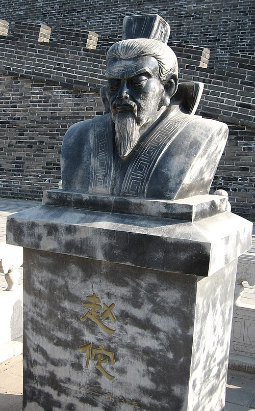
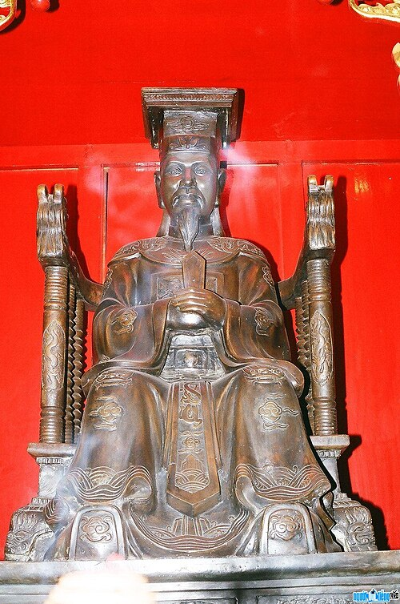
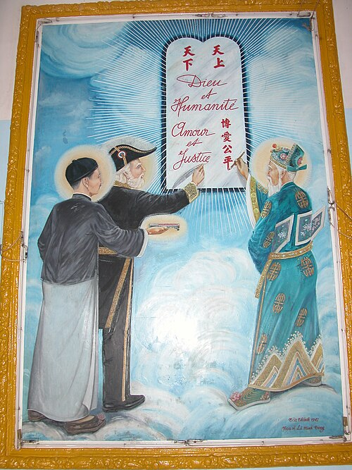
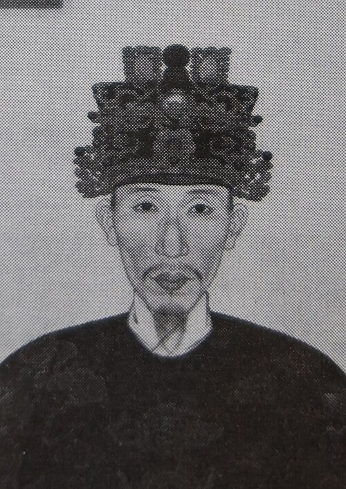
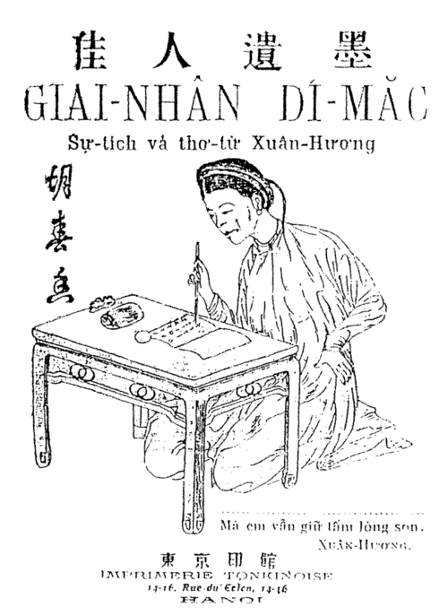
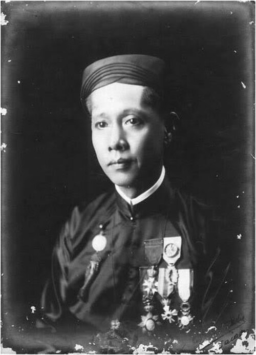
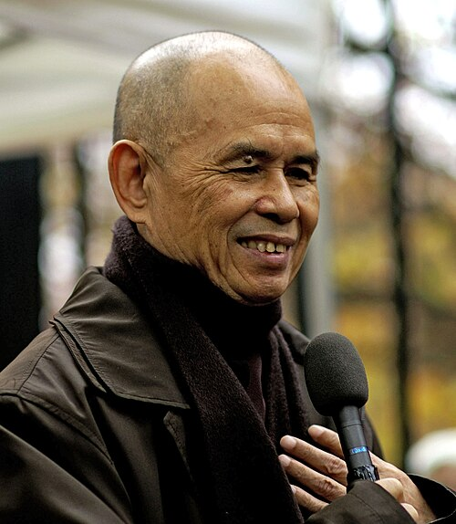

40 nhân vật · 5/5 nhóm có dữ liệu · nguồn: ch90.md
Phụ lục này dùng chung bốn tiêu chí (a)–(d) của atlas, nhưng đổi hệ quy chiếu: ảnh hưởng được đo trong phạm vi Việt Nam và Đông Nam Á, không phải toàn nhân loại. Đó là lý do nó tách riêng và không tính vào thống kê độ phủ của atlas chính — trộn hai thang đo khác nhau vào một bảng xếp hạng sẽ làm sai lệch cả hai. Năm nhóm chia theo thời kỳ lịch sử thay vì từng thế kỷ, vì tư liệu Việt Nam trước thế kỷ 10 quá thưa để chia nhỏ hơn.
Bối cảnh. Văn hoá Đông Sơn ở đỉnh cao với kỹ thuật đúc đồng và canh tác lúa nước, nhưng không để lại tên người. Hai nhà nước sớm nối nhau: Âu Lạc bị Triệu Đà thôn tính khoảng năm 179 TCN, rồi chính Nam Việt bị nhà Hán diệt năm 111 TCN. Lấy mốc nào làm khởi điểm Bắc thuộc — 179 hay 111 TCN — tuỳ thuộc câu hỏi nhà Triệu có thuộc quốc thống Việt Nam hay không.
Xếp theo năm, khoảng cách không theo tỉ lệ thời gian.
Thứ tự theo năm: An Dương Vương (k. 257 TCN – 208 TCN) → Triệu Đà (207 TCN – 137 TCN).
timeline
257–208 TCN : An Dương Vương · Chính trị/Nhà nước
207–137 TCN : Triệu Đà · Chính trị/Nhà nước
timeline
257–208 TCN : An Dương Vương · Chính trị/Nhà nước
207–137 TCN : Triệu Đà · Chính trị/Nhà nước
k. 257 TCN – 208 TCNCổ Loa, nay thuộc Hà NộiĐông Nam ÁChính trị/Nhà nướcQuân sựniên đại: ThấpKhông áp dụngQ1274690
Tư tưởng / đóng góp chính
Theo truyền thống, ông hợp nhất Âu Việt với Lạc Việt thành Âu Lạc và dời đô về Cổ Loa. Khảo cổ xác nhận toà thành ba vòng dời hơn hai triệu mét khối đất, kho một vạn mũi tên đồng và khuôn đúc tại chỗ ở Cầu Vực (Kim, Lai và Trinh, 2010) — bằng chứng sớm nhất ở Việt Nam về một quyền lực huy động được lao dịch lớn. Nhưng lớp luỹ sớm nhất có thể có trước niên đại truyền thống của ông: công trình chứng minh một nhà nước, không chứng minh chính ông. Truyền thuyết nỏ thần và Mỵ Châu – Trọng Thuỷ, chép sớm nhất trong Giao Châu ngoại vực ký thế kỷ 3–4, thành câu chuyện cảnh giác kể mãi về sau.
Vì sao chọn
Ứng viên cùng giai đoạn là các Hùng Vương, nhưng đó là một danh sách truyền thuyết không có niên đại hay cá nhân xác định được. An Dương Vương được chọn vì counterfactual (d) và vì có vật chứng: thành Cổ Loa và kho mũi tên là mốc khảo cổ cho bước chuyển từ thủ lĩnh bộ lạc sang nhà nước. Nhãn [Tranh cãi lịch sử] vì nhân vật chỉ được chép trong thư tịch soạn rất muộn.
Keith W. Taylor, The Birth of Vietnam (1983), chương 1; báo cáo khai quật di chỉ Cổ Loa, Viện Khảo cổ học.
CH90-BCE03_01-01

Chân dung Triệu Đà, A statue of Zhao Tuo (tưởng tượng).Ảnh: Wikimedia Commons, David Chen ( Iamdavidtheking 11:50, 10 September 2007 (UTC)), CC BY 3.0, đã thu nhỏ.
207 TCN – 137 TCNPhiên Ngung, Nam Việt, nay thuộc Quảng Châu, Trung QuốcĐông Nam ÁChính trị/Nhà nướcniên đại: Trung bìnhKhông áp dụngQ701895
Tư tưởng / đóng góp chính
Viên quan nhà Tần, nhân lúc Tần sụp đổ đã lập nước Nam Việt, thôn tính Âu Lạc và cai trị bảy mươi năm; nhà nước ông dựng tồn tại tới năm 111 TCN. Ông theo đường lối dung hoà: giữ tục địa phương, dùng người Việt làm quan, tự xưng đế ngang hàng nhà Hán. Mộ Triệu Văn Đế khai quật năm 1983 cho thấy một triều đình pha trộn nghi thức Hán với đồ dùng bản địa. Việc ông được xếp là "chính thống" hay "ngoại xâm" là một trong những tranh luận sử học kéo dài nhất của Việt Nam.
Vì sao chọn
Ứng viên cùng giai đoạn là Lữ Gia, tể tướng cầm đầu cuộc kháng cự khi nhà Hán diệt Nam Việt năm 111 TCN. Triệu Đà được chọn theo counterfactual (d): ông tạo ra nhà nước mà Lữ Gia chỉ bảo vệ. Về độ bền (b), việc Lê Văn Hưu xếp nhà Triệu vào quốc thống từ thế kỷ 13, rồi Ngô Thì Sĩ năm 1775 và dòng chính thống hiện nay phản bác trong khi một mạch xét lại vẫn còn, cho thấy vấn đề lặp lại suốt lịch sử Việt Nam: ranh giới giữa tiếp nhận và bị đồng hoá.
Keith W. Taylor, The Birth of Vietnam (1983), chương 1; Đại Việt sử ký toàn thư, Kỷ nhà Triệu (kế thừa lập trường của Lê Văn Hưu); Ngô Thì Sĩ, Việt sử tiêu án.
CH90-BCE03_01-02
TK 1–9 1 – 900 · 8 nhân vật
Bối cảnh. Chín thế kỷ Bắc thuộc: chính quyền đô hộ áp đặt quận huyện, chữ Hán và Nho học, trong khi làng xã giữ tiếng nói và tín ngưỡng riêng. Phật giáo vào Giao Châu bằng đường biển từ Ấn Độ trước khi qua Trung Hoa. Các cuộc khởi nghĩa nổ ra đều đặn, phần lớn ngắn, nhưng tạo thành một mạch ký ức liên tục.
Xếp theo năm, khoảng cách không theo tỉ lệ thời gian.
Thứ tự theo năm: Trưng Trắc (k. 14 – 43) → Sĩ Nhiếp (137 – 226) → Bà Triệu (k. 225 – 248) → Lý Nam Đế (503 – 548) → Tì-ni-đa-lưu-chi (580 – 594) → Mai Hắc Đế (k. 713 – 722) → Khương Công Phụ (731 – 805) → Phùng Hưng (k. 766 – 791).
timeline
14–43 : Trưng Trắc · Quân sự
137–226 : Sĩ Nhiếp · Chính trị/Nhà nước
225–248 : Bà Triệu · Quân sự
503–548 : Lý Nam Đế · Chính trị/Nhà nước
580–594 : Tì-ni-đa-lưu-chi · Tôn giáo/Tâm linh
713–722 : Mai Hắc Đế · Quân sự
731–805 : Khương Công Phụ · Chính trị/Nhà nước
766–791 : Phùng Hưng · Quân sự
timeline
14–43 : Trưng Trắc · Quân sự
137–226 : Sĩ Nhiếp · Chính trị/Nhà nước
225–248 : Bà Triệu · Quân sự
503–548 : Lý Nam Đế · Chính trị/Nhà nước
580–594 : Tì-ni-đa-lưu-chi · Tôn giáo/Tâm linh
713–722 : Mai Hắc Đế · Quân sự
731–805 : Khương Công Phụ · Chính trị/Nhà nước
766–791 : Phùng Hưng · Quân sự
k. 14 – 43Mê Linh, nay thuộc Hà NộiĐông Nam ÁQuân sựChính trị/Nhà nướcniên đại: Trung bìnhKhông áp dụngQ25418142
Tư tưởng / đóng góp chính
Cùng em là Trưng Nhị, bà khởi binh năm 40 chống thái thú Tô Định, chiếm được sáu mươi lăm thành và xưng vương ở Mê Linh, cai trị ba năm trước khi thua Mã Viện. Đây là cuộc nổi dậy có tổ chức sớm nhất chống ách đô hộ phương Bắc được Hậu Hán thư đương thời chép; phía Việt, bản chép sớm nhất còn lại là Toàn thư thế kỷ 15. Việc hai người phụ nữ cầm quân, cùng vai trò các nữ tướng đi theo, về sau được dẫn liên tục như bằng chứng cho vị thế của phụ nữ trong xã hội Lạc Việt trước khi Nho giáo bén rễ sâu.
Vì sao chọn
Ứng viên cùng loại là Bà Triệu ở thế kỷ 3 và Lý Bí ở thế kỷ 6. Hai Bà Trưng được xếp trước theo tính nguyên bản (c) và độ bền (b): đây là mốc đầu tiên của mạch khởi nghĩa, và là hình tượng được đền thờ, đưa vào sách giáo khoa, đặt tên đường liên tục tới nay ở cả ba miền. Dùng Q-ID của Trưng Trắc vì Wikidata xếp "Hai Bà Trưng" là một cặp, không phải một người.
Kế thừa từ
Không xác định
Ảnh hưởng tới
Bà TriệuCH90-CE01_09-02tương đồng độc lậpsuy đoán học giả
k. 225 – 248Cửu Chân, nay thuộc Thanh HoáĐông Nam ÁQuân sựniên đại: Trung bìnhKhông áp dụngQ269989
Tư tưởng / đóng góp chính
Bà cầm đầu cuộc nổi dậy ở Cửu Chân năm 248 chống chính quyền Đông Ngô, cầm cự vài tháng trước khi thất bại. Sử liệu về bà mỏng: ghi chép sớm nhất là văn bản Hán, còn tên, tuổi và câu nói nổi tiếng chỉ đến từ nguồn Việt thế kỷ 17 như Thiên Nam ngữ lục; câu được gán cho bà — thà cưỡi cơn gió mạnh, đạp sóng dữ, chứ không chịu khom lưng làm tì thiếp — trở thành một trong những phát ngôn được trích nhiều nhất trong văn hoá Việt Nam. Cùng với Hai Bà Trưng, bà củng cố mô-típ người phụ nữ cầm quân như một đặc điểm của ký ức lịch sử Việt.
Vì sao chọn
Cùng thế kỷ không có ứng viên nào nổi bật hơn; đối thủ thực sự là chính Hai Bà Trưng về mặt trùng lặp chủ đề. Bà Triệu vẫn được giữ theo độ bền (b): việc mô-típ lặp lại chỉ sau hai trăm năm cho thấy đây là khuôn mẫu phản kháng ổn định chứ không phải sự kiện đơn lẻ. Niên đại để Trung bình vì năm sinh chỉ là suy đoán từ tuổi được chép.
Kế thừa từ
Trưng TrắcCH90-CE01_09-01tương đồng độc lậpsuy đoán học giả
Ảnh hưởng tới
Ký ức dân gian và tín ngưỡng thờ nữ tướng kế thừaqua trường phái
Nguồn
Đại Việt sử ký toàn thư, Ngoại kỷ; Keith W. Taylor, The Birth of Vietnam (1983).
137 – 226Luy Lâu, Giao Chỉ, nay thuộc Bắc NinhĐông Nam ÁChính trị/Nhà nướcVăn họcniên đại: CaoKhông áp dụngQ736714
Tư tưởng / đóng góp chính
Thái thú Giao Chỉ suốt bốn mươi năm, ông giữ cho vùng này gần như tự trị và yên ổn giữa lúc Trung Hoa tan vỡ thời Tam Quốc, khiến sĩ phu phương Bắc chạy loạn xuống tị nạn rất đông. Luy Lâu dưới thời ông thành một trung tâm Phật giáo sớm, nơi tăng sĩ Ấn Độ và Trung Á dừng chân — dù con số hai mươi tháp, năm trăm tăng, mười lăm quyển kinh dịch chỉ có trong Thiền uyển tập anh thế kỷ 14. Nho học Việt Nam đời sau tôn ông là "Nam Giao học tổ", một mỹ hiệu đặt muộn, dù phần lớn công lao thực chất thuộc về lớp di dân mà ông dung nạp.
Vì sao chọn
Ông được chọn theo counterfactual (d) chứ không theo thành tựu cá nhân: bốn mươi năm ổn định hiếm hoi là điều kiện để Luy Lâu trở thành cửa ngõ của cả Phật giáo lẫn Nho học vào Việt Nam. Ứng viên thay thế là Mâu Tử, nho sĩ lánh loạn xuống Giao Chỉ rồi theo Phật và viết Lý hoặc luận tại đó; còn Khương Tăng Hội tuy sinh ở Giao Chỉ nhưng dịch kinh ở Kiến Nghiệp từ năm 247, sau khi Sĩ Nhiếp mất. Ảnh hưởng của Mâu Tử nằm trong khuôn khổ quyền lực Sĩ Nhiếp tạo ra.
580 – 594chùa Pháp Vân, Luy Lâu, nay thuộc Bắc NinhĐông Nam ÁTôn giáo/Tâm linhniên đại: ThấpThực tạiQ4111528
Tư tưởng / đóng góp chính
Tăng sĩ gốc Nam Ấn, thư tịch Hán ghi ông dịch kinh ở Trường An năm 582; riêng chuyến sang Giao Châu năm 580 và việc trụ chùa Pháp Vân chỉ có trong Thiền uyển tập anh. Văn bản ấy coi ông là tổ dòng Thiền truyền mười chín đời tới thế kỷ 13 — phả hệ mà Cuong Tu Nguyen (1997) cho là dựng hồi cố vào thế kỷ 13–14. Dòng này pha Thiền với mật chú và tín ngưỡng bản địa, nét còn thấy trong Phật giáo Việt Nam đến nay. Việc Phật giáo bén rễ sâu trước khi Nho giáo thành quốc giáo định hình toàn bộ đời sống tinh thần thời Lý–Trần.
Vì sao chọn
Ứng viên cạnh tranh là Khương Tăng Hội, người gốc Giao Châu dịch kinh ở Kiến Nghiệp ba thế kỷ trước, và Vô Ngôn Thông, lập dòng Thiền thứ hai năm 820. Tì-ni-đa-lưu-chi được chọn theo tính nguyên bản (c) về mặt thiết chế: ông là người đầu tiên lập một dòng truyền thừa liên tục có tên tuổi chép được, thứ mà Khương Tăng Hội không để lại. Cả niên đại lẫn chính sự tồn tại của dòng phái chỉ biết qua Thiền uyển tập anh soạn rất muộn.
503 – 548Long Biên, nhà nước Vạn XuânĐông Nam ÁChính trị/Nhà nướcQuân sựniên đại: CaoKhông áp dụngQ708341
Tư tưởng / đóng góp chính
Năm 542 ông đánh đuổi thứ sử nhà Lương là Tiêu Tư; năm 544 xưng đế, đặt quốc hiệu Vạn Xuân và niên hiệu Thiên Đức, lập triều đình có văn ban võ ban. Việc dựng chùa Khai Quốc gán cho ông chỉ có trong bia và truyền thống đời sau, không có trong Toàn thư. Đây là lần đầu một thủ lĩnh người Việt không chỉ nổi dậy mà tuyên bố một nhà nước ngang hàng, có đủ biểu tượng chủ quyền theo chuẩn mực Đông Á đương thời. Vạn Xuân tồn tại gần sáu mươi năm qua tay Triệu Quang Phục rồi Lý Phật Tử (Hậu Lý Nam Đế) trước khi nhà Tuỳ tái chiếm năm 602.
Vì sao chọn
Ứng viên cùng mạch là Triệu Quang Phục, người giữ Vạn Xuân sau ông, và Mai Thúc Loan thế kỷ 8. Lý Bí được chọn theo tính nguyên bản (c): việc đặt quốc hiệu và niên hiệu là bước nhảy về chất so với mọi cuộc khởi nghĩa trước, vốn chỉ nhằm đuổi quan lại. Về counterfactual (d), mô hình nhà nước ông dựng là tiền lệ mà các triều đại độc lập thế kỷ 10 viện dẫn.
k. 713 – 722Hoan Châu, nay thuộc Nghệ AnĐông Nam ÁQuân sựniên đại: ThấpKhông áp dụngQ700879
Tư tưởng / đóng góp chính
Ông khởi binh ở Hoan Châu và xưng đế; sử Đường và Toàn thư đều đặt việc Dương Tư Húc dẹp ông vào năm 722, còn mốc khởi đầu 713 và kịch bản chiếm phủ thành Tống Bình là tái dựng hiện đại của Phan Huy Lê, đang bị tranh luận. Điểm đáng chú ý là quy mô liên kết: sử Đường chép lực lượng của ông huy động được cả Lâm Ấp và Chân Lạp, tức cuộc nổi dậy vượt khỏi khuôn khổ một châu và mang tính khu vực. Căn cứ Vạn An cùng hệ thống đền thờ dọc sông Lam cho thấy ảnh hưởng tại chỗ kéo dài rất lâu sau khi ông mất.
Vì sao chọn
Ứng viên cùng thế kỷ là Phùng Hưng, nổi dậy muộn hơn và thành công hơn ở vùng châu thổ. Mai Thúc Loan được giữ vì phạm vi (a): đây là cuộc nổi dậy duy nhất thời Bắc thuộc có bằng chứng liên minh với các thế lực Đông Nam Á lân cận, cho thấy Giao Châu khi đó nằm trong một mạng lưới khu vực chứ không chỉ là vùng biên của Trung Hoa.
k. 766 – 791Đường Lâm, nay thuộc Hà NộiĐông Nam ÁQuân sựChính trị/Nhà nướcniên đại: ThấpKhông áp dụngQ7188354
Tư tưởng / đóng góp chính
Toàn thư dồn cả cuộc nổi dậy, việc chiếm phủ thành Tống Bình và cái chết của ông vào năm 791; Việt điện u linh kéo dài từ niên hiệu Đại Lịch (766–779); sử Đường đương thời chỉ chép thủ lĩnh Đỗ Anh Hàn, không nhắc tên ông. Danh hiệu Bố Cái Đại Vương — ghi âm hai tiếng Việt thuần, đọc là "cha mẹ" hay "vua lớn" còn tranh luận — là một trong những dấu vết sớm nhất của ý thức tự xưng bằng ngôn ngữ bản địa trong một danh hiệu chính trị. Cuộc nổi dậy diễn ra khi nhà Đường suy yếu sau loạn An Lộc Sơn, báo trước khoảng trống mà họ Khúc tận dụng một thế kỷ sau.
Vì sao chọn
Ứng viên cùng giai đoạn là Dương Thanh, nổi dậy năm 819, và Khúc Thừa Dụ đầu thế kỷ 10. Phùng Hưng được chọn theo tính nguyên bản (c) ở khía cạnh biểu tượng: danh hiệu tiếng Việt cho thấy bản sắc ngôn ngữ vẫn sống sau tám thế kỷ đô hộ, điều mà các cuộc nổi dậy khác không để lại bằng chứng rõ bằng.
Kế thừa từ
Mai Hắc ĐếCH90-CE01_09-06tương đồng độc lậpsuy đoán học giả
Đại Việt sử ký toàn thư, Ngoại kỷ, quyển 5; Keith W. Taylor, The Birth of Vietnam (1983), chương 5; Taylor, "Phùng Hưng: Mencian King or Austric Paramount?", The Vietnam Forum 8 (1986).
731 – 805Ái Châu, nay thuộc Thanh Hoá; làm quan tại Trường AnĐông Nam ÁChính trị/Nhà nướcVăn họcniên đại: Trung bìnhKhông áp dụngQ6191512
Tư tưởng / đóng góp chính
Người Ái Châu, ông đỗ tiến sĩ nhà Đường và thăng tới chức tể tướng dưới triều Đường Đức Tông — người gốc Giao Châu giữ chức vụ cao nhất từng biết trong bộ máy Trung Hoa. Bài phú Bạch vân chiếu xuân hải của ông được chép trong Toàn Đường văn. Ông bị giáng chức vì can gián vua về việc xây lăng cho công chúa, một hành xử đúng khuôn mẫu "trực gián" của Nho sĩ. Trường hợp của ông cho thấy khoa cử là con đường thăng tiến có thật, không chỉ lý thuyết, cho người bản địa.
Vì sao chọn
Đây là mục nhằm cân bằng cách kể lịch sử Bắc thuộc vốn chỉ xoay quanh khởi nghĩa. Ứng viên tương tự là em ông Khương Công Phục, cũng đỗ đạt. Khương Công Phụ được chọn theo phạm vi (a): chức tể tướng là mức cao nhất, và sự nghiệp của ông là bằng chứng sớm cho việc tiếp nhận Nho học không chỉ là bị áp đặt mà còn là chiến lược của giới tinh hoa bản địa.
Chu Văn AnCH90-CE10_14-09tương đồng độc lậpsuy đoán học giả
Được ghi là nguồn kế thừa bởi (tự động từ dữ liệu)
Chu Văn AnCH90-CE10_14-09tương đồng độc lậpsuy đoán học giả
Nguồn
Tân Đường thư, quyển 152; Toàn Đường văn, quyển 446.
CH90-CE01_09-08
TK 10–14 901 – 1400 · 10 nhân vật
Bối cảnh. Nhà Đường sụp, họ Khúc rồi Ngô Quyền giành tự chủ; Đinh, Tiền Lê, Lý, Trần lần lượt dựng nhà nước tập quyền, dời đô về Thăng Long, mở khoa cử và ba lần đẩy lui quân Mông Cổ – Nguyên. Phật giáo giữ vị trí quốc giáo nhưng Nho học bắt đầu lấn dần vào bộ máy hành chính.
Xếp theo năm, khoảng cách không theo tỉ lệ thời gian.
Thứ tự theo năm: Ngô Quyền (897 – 944) → Đinh Bộ Lĩnh (924 – 979) → Vạn Hạnh (k. 938 – 1025) → Lý Thái Tổ (974 – 1028) → Lý Thường Kiệt (1019 – 1105) → Trần Thủ Độ (1194 – 1264) → Trần Hưng Đạo (1228 – 1300) → Trần Nhân Tông (1258 – 1308) → Chu Văn An (1292 – 1370) → Hồ Quý Ly (1336 – 1407).
timeline
897–944 : Ngô Quyền · Quân sự
924–979 : Đinh Bộ Lĩnh · Chính trị/Nhà nước
938–1025 : Vạn Hạnh · Tôn giáo/Tâm linh
974–1028 : Lý Thái Tổ · Chính trị/Nhà nước
1019–1105 : Lý Thường Kiệt · Quân sự
1194–1264 : Trần Thủ Độ · Chính trị/Nhà nước
1228–1300 : Trần Hưng Đạo · Quân sự
1258–1308 : Trần Nhân Tông · Tôn giáo/Tâm linh
1292–1370 : Chu Văn An · Giáo dục
1336–1407 : Hồ Quý Ly · Chính trị/Nhà nước
timeline
897–944 : Ngô Quyền · Quân sự
924–979 : Đinh Bộ Lĩnh · Chính trị/Nhà nước
938–1025 : Vạn Hạnh · Tôn giáo/Tâm linh
974–1028 : Lý Thái Tổ · Chính trị/Nhà nước
1019–1105 : Lý Thường Kiệt · Quân sự
1194–1264 : Trần Thủ Độ · Chính trị/Nhà nước
1228–1300 : Trần Hưng Đạo · Quân sự
1258–1308 : Trần Nhân Tông · Tôn giáo/Tâm linh
1292–1370 : Chu Văn An · Giáo dục
1336–1407 : Hồ Quý Ly · Chính trị/Nhà nước
897 – 944Đường Lâm và Cổ Loa, nay thuộc Hà NộiĐông Nam ÁQuân sựChính trị/Nhà nướcniên đại: CaoKhông áp dụngQ699904
Tư tưởng / đóng góp chính
Trận Bạch Đằng năm 938, với bãi cọc đóng ngầm đón thuỷ triều để phá hạm đội Nam Hán, chấm dứt hơn một nghìn năm Bắc thuộc. Sau chiến thắng ông bỏ chức tiết độ sứ — danh hiệu do phương Bắc phong — mà xưng vương, đặt trăm quan, định triều nghi, dựng kinh đô ở Cổ Loa. Việc chọn lại đất cũ của An Dương Vương là một tuyên bố nối tiếp chính thống bản địa. Chiến thuật cọc ngầm về sau được Lê Hoàn và Trần Hưng Đạo dùng lại ngay trên khúc sông ấy.
Vì sao chọn
Ứng viên cạnh tranh là Khúc Thừa Dụ, người giành quyền tự chủ trên thực tế từ năm 905, và Dương Đình Nghệ. Ngô Quyền được chọn theo counterfactual (d): họ Khúc vẫn nhận danh nghĩa nhà Đường, còn ông là người đầu tiên cắt đứt hẳn quan hệ phiên thuộc bằng cả quân sự lẫn danh hiệu. Về độ bền (b), năm 938 là mốc mở đầu kỷ nguyên độc lập trong mọi cách phân kỳ sử Việt.
924 – 979Hoa Lư, nay thuộc Ninh BìnhĐông Nam ÁChính trị/Nhà nướcniên đại: CaoKhông áp dụngQ1184365
Tư tưởng / đóng góp chính
Dẹp xong loạn mười hai sứ quân, ông thống nhất lãnh thổ và năm 968 xưng Hoàng đế — không phải vương — đặt quốc hiệu Đại Cồ Việt và định đô Hoa Lư, đến năm 970 mới đặt niên hiệu Thái Bình. Ông lập quân đội mười đạo, đặt quan chế văn võ, cho đúc tiền Thái Bình hưng bảo, đồng tiền riêng đầu tiên của Việt Nam. Việc xưng đế trong khi vẫn nhận sách phong từ nhà Tống tạo ra thế lưỡng trùng danh hiệu: đế ở trong nước, vương với phương Bắc — một công thức ngoại giao mà các triều sau dùng suốt chín trăm năm.
Vì sao chọn
Ứng viên cạnh tranh là Lê Hoàn, người kế tục và đánh bại quân Tống năm 981. Đinh Bộ Lĩnh được chọn theo tính nguyên bản (c): quốc hiệu, niên hiệu, tiền riêng và công thức "trong đế ngoài vương" đều bắt đầu từ ông; Lê Hoàn vận hành bộ máy đó. Về counterfactual (d), không có bước thống nhất này, vùng châu thổ nhiều khả năng tiếp tục phân liệt theo các sứ quân.
k. 938 – 1025chùa Lục Tổ, hương Cổ Pháp, nay thuộc Bắc NinhĐông Nam ÁTôn giáo/Tâm linhChính trị/Nhà nướcniên đại: Trung bìnhThực tạiQ1076219
Tư tưởng / đóng góp chính
Thiền sư thuộc dòng Tì-ni-đa-lưu-chi, ông là cố vấn của Lê Đại Hành rồi là người chủ mưu đưa Lý Công Uẩn — do Lý Khánh Văn nuôi, do ông dạy ở chùa Lục Tổ — lên ngôi năm 1009, gần như không đổ máu. Bài kệ "thân như bóng chớp, có rồi không" của ông thuộc lớp thơ thiền sớm nhất của người Việt, sau Quốc tộ của Đỗ Pháp Thuận và Vương lang quy của Khuông Việt, và chỉ còn qua Thiền uyển tập anh. Vai trò của ông định hình mô hình quan hệ chùa – triều đình đặc trưng thời Lý: tăng sĩ vừa là cố vấn chính trị vừa là người giữ học vấn, trước khi Nho sĩ thay thế vị trí ấy.
Vì sao chọn
Ứng viên cùng loại là Khuông Việt Ngô Chân Lưu, vị tăng thống đầu tiên, và Đỗ Pháp Thuận, người tiếp sứ Tống. Vạn Hạnh được chọn theo counterfactual (d): chuyển giao quyền lực năm 1009 là bước ngoặt mở ra hai thế kỷ ổn định nhà Lý, và ông là người tổ chức nó. Niên đại để Trung bình vì năm sinh chỉ suy ra từ tuổi thọ chép trong Thiền uyển tập anh; năm mất thì bản truyền lại chép Thuận Thiên 16 (1025), còn Trần Văn Giáp hiệu đính thành 1018, trùng với ĐVSKTT.
974 – 1028Thăng Long, nay là Hà NộiĐông Nam ÁChính trị/Nhà nướcniên đại: CaoKhông áp dụngQ716945
Tư tưởng / đóng góp chính
Lên ngôi năm 1009, ngay năm sau ông dời đô từ Hoa Lư ra Đại La và đổi tên thành Thăng Long. Chiếu dời đô dựng lý lẽ hai tầng: viện tiền lệ Thương – Chu, mệnh trời và thế "rồng cuộn hổ ngồi" để chính danh, rồi tả Đại La bằng con mắt thực dụng — đất bằng rộng, tiện đường sông, dân cư không khổ vì ngập lụt. Vế sau ấy hiếm trong văn thư thế kỷ 11. Lựa chọn này chuyển trung tâm quyền lực từ thung lũng phòng thủ ra đồng bằng mở, gắn nhà nước với sản xuất lúa nước và thương mại sông biển. Thăng Long giữ vai trò ấy gần một nghìn năm.
Vì sao chọn
Ứng viên cạnh tranh là con ông Lý Thái Tông, người ban bộ Hình thư năm 1042, và Lý Thánh Tông, người lập Văn Miếu. Lý Công Uẩn được chọn theo counterfactual (d) và độ bền (b): quyết định dời đô là điều kiện nền cho mọi thành tựu sau đó của nhà Lý, và là quyết định quy hoạch có hệ quả dài nhất trong lịch sử Việt Nam.
1019 – 1105Thăng Long và phòng tuyến sông Như NguyệtĐông Nam ÁQuân sựChính trị/Nhà nướcniên đại: CaoKhông áp dụngQ702734
Tư tưởng / đóng góp chính
Cuối năm 1075 ông chủ động đánh sang đất Tống để phá thế chuẩn bị xâm lược, hạ Khâm Châu rồi phá Ung Châu tháng 3/1076, rồi rút về lập phòng tuyến sông Như Nguyệt chặn đứng đại quân Tống năm 1077 — một thế trận tiến công phủ đầu rồi phòng ngự chiều sâu, hiếm gặp ở Đông Á đương thời. Bài thơ "Nam quốc sơn hà" gắn với trận này được coi là tuyên ngôn chủ quyền sớm nhất của người Việt, dù không thư tịch cổ nào ghi tác giả và truyền thuyết sớm còn gắn nó với cuộc kháng Tống năm 981; bài thơ khẳng định biên giới là điều đã định trong "thiên thư", tức lập luận chính danh chứ không chỉ sức mạnh.
Vì sao chọn
Ứng viên cùng thời là Tông Đản, phối hợp đánh Ung Châu, và Lý Đạo Thành bên văn ban. Lý Thường Kiệt được chọn theo tính nguyên bản (c): tư duy đánh trước để phá thế chuẩn bị của đối phương là lựa chọn chiến lược chưa từng có trước đó ở Đại Việt. Về độ bền (b), sau Như Nguyệt nhà Tống không mở cuộc xâm lược nào nữa, và thế trận ấy thành khuôn mẫu cho Trần Hưng Đạo hai thế kỷ sau; "Nam quốc sơn hà" thì gắn với chiến dịch của ông hơn là với ngòi bút ông.
1194 – 1264Thăng LongĐông Nam ÁChính trị/Nhà nướcniên đại: Trung bìnhKhông áp dụngQ712473
Tư tưởng / đóng góp chính
Ông tổ chức cuộc chuyển giao từ nhà Lý sang nhà Trần năm 1225 bằng một cuộc hôn nhân chứ không bằng binh biến, rồi đặt nền cho bộ khung thiết chế đặc trưng của triều Trần: hôn nhân nội tộc để giữ quyền lực trong họ, thái ấp cấp cho tông thất đổi lấy nghĩa vụ quân sự, và lệ Thái thượng hoàng — chính ông dâng sớ xin tôn Trần Thừa làm Thượng hoàng năm 1226, dù sử không chép ông là người thiết kế cả chế độ. Chính bộ khung ấy cho phép Đại Việt huy động lực lượng nhanh và giữ được thống nhất chỉ huy khi quân Mông Cổ rồi quân Nguyên tràn sang ba lần.
Vì sao chọn
Ứng viên thay thế là Trần Thái Tông, vị vua đầu triều. Trần Thủ Độ được chọn theo counterfactual (d): các thiết chế quyết định sức bền của nhà Trần đều do ông thiết kế, và câu trả lời của ông khi quân Mông Cổ tràn vào Thăng Long đầu năm 1258 — đầu thần chưa rơi xuống đất, xin bệ hạ đừng lo — là minh chứng cho vai trò cầm trịch thực tế. Các biện pháp tàn khốc với tông thất nhà Lý cũng là của ông, phụ lục ghi cả hai mặt.
1228 – 1300Vạn Kiếp và Thăng LongĐông Nam ÁQuân sựniên đại: CaoKhông áp dụngQ511375
Tư tưởng / đóng góp chính
Tổng chỉ huy trong hai cuộc kháng chiến chống Nguyên 1285 và 1287–1288, ông chọn lối rút lui chiến lược, bỏ trống kinh thành, tiêu hao hậu cần địch rồi phản công khi quân Nguyên kiệt sức vì khí hậu và tiếp tế — kết thúc bằng trận Bạch Đằng 1288 dùng lại kế cọc ngầm. Hịch tướng sĩ là văn bản động viên quân đội sớm nhất còn lại; binh thư ông soạn thì đã thất truyền — văn bản mang tên Binh thư yếu lược lưu hành ngày nay được khảo cứu xác định là soạn muộn, không sớm hơn 1869. Lời dặn cuối đời — khoan thư sức dân làm kế sâu rễ bền gốc — tóm lại quan niệm quốc phòng của ông.
Vì sao chọn
Ứng viên cùng thời là Trần Khánh Dư, người phá đoàn thuyền lương Trương Văn Hổ, và Trần Nhật Duật. Trần Hưng Đạo được chọn theo phạm vi (a) và độ bền (b): ông dự cả ba lần chống xâm lược, và từ khi được phong Quốc công tiết chế tháng 10/1283 thì là người hoạch định toàn cục hai lần sau, và việc đánh bại đế chế Mông Cổ ở đỉnh cao là sự kiện đưa Đại Việt vào lịch sử quân sự thế giới, bên cạnh Nhật Bản và Ai Cập.
1258 – 1308Thăng Long và núi Yên Tử, nay thuộc Quảng NinhĐông Nam ÁTôn giáo/Tâm linhChính trị/Nhà nướcniên đại: CaoCon ngườiThực tạiQ72083
Tư tưởng / đóng góp chính
Vị vua trực tiếp lãnh đạo hai cuộc kháng chiến chống Nguyên, sau đó nhường ngôi và xuất gia, lập thiền phái Trúc Lâm Yên Tử — dòng Thiền do người Việt sáng lập, hợp nhất ba dòng có trước. Bài phú Nôm Cư trần lạc đạo của ông nêu chủ trương tu giữa đời thường: "đói thì ăn, mệt thì ngủ", không cần lìa bỏ xã hội mới đạt đạo. Đây cũng là một trong những văn bản chữ Nôm sớm nhất còn lại. Ông đồng thời sắp xếp cuộc hôn nhân Huyền Trân – Chế Mân, mở rộng lãnh thổ về phía nam bằng ngoại giao.
Vì sao chọn
Ứng viên cùng dòng là Pháp Loa và Huyền Quang, hai tổ kế tiếp của Trúc Lâm. Trần Nhân Tông được chọn theo tính nguyên bản (c): ông là người sáng lập, và là trường hợp hiếm trong lịch sử thế giới khi một vị vua thắng trận tự nguyện rời ngôi để xây dựng một truyền thống tôn giáo. Về độ bền (b), Trúc Lâm vẫn là bản sắc được viện dẫn của Phật giáo Việt Nam hiện nay.
1292 – 1370Thanh Đàm và Quốc Tử Giám, Thăng LongĐông Nam ÁGiáo dụcTriết họcniên đại: Trung bìnhCon ngườiQ1155893
Tư tưởng / đóng góp chính
Ông mở trường tư ở Thanh Đàm dạy không phân biệt giàu nghèo, sau được mời làm tư nghiệp Quốc Tử Giám. Dưới triều Trần Dụ Tông (ĐVSKTT không ghi năm, niên đại thường dẫn là 1358), ông dâng Thất trảm sớ xin chém bảy gian thần; vua không nghe, ông từ quan về ẩn ở Chí Linh và không nhận mời ra làm quan nữa. Hành vi đó định hình mẫu mực "kẻ sĩ" trong văn hoá Việt Nam: can gián đến cùng, rồi rút lui giữ khí tiết thay vì thoả hiệp. Ông là người đầu tiên không thuộc hoàng tộc được thờ ở Văn Miếu.
Vì sao chọn
Ứng viên cùng thời là Trương Hán Siêu và Lê Văn Hưu, tác giả bộ quốc sử đầu tiên. Chu Văn An được chọn theo độ bền (b): trước tác của ông gần như mất hết, nhưng hình mẫu đạo đức mà ông để lại được viện dẫn liên tục suốt sáu thế kỷ, tới mức tên ông trở thành chuẩn mực để đánh giá người làm thầy và người làm quan.
Kế thừa từ
Khương Công PhụCH90-CE01_09-08tương đồng độc lậpsuy đoán học giả
1336 – 1407Tây Đô, nay thuộc Thanh HoáĐông Nam ÁChính trị/Nhà nướcKinh tếniên đại: Trung bìnhKhông áp dụngQ1319152
Tư tưởng / đóng góp chính
Gói cải cách triệt để nhất thời quân chủ Việt Nam: phát hành tiền giấy Thông bảo hội sao thay tiền đồng, hạn điền, hạn nô phá thế lực điền trang quý tộc Trần, lập sổ hộ tịch toàn quốc, mở trường, định phép thi tứ trường (1396), thêm kỳ thi viết chữ và toán pháp (1404). Khoa cử vẫn thi bằng chữ Hán; chữ Nôm ông dùng ở chỗ khác: dịch thiên Vô dật của Kinh Thư (1395) dạy vua, soạn Quốc ngữ Thi nghĩa giải Kinh Thi (1396), bài tựa cãi lại Chu Hy. Hầu hết cải cách thất bại vì thực hiện quá gấp giữa lúc nhà Minh đe doạ, và triều Hồ sụp sau bảy năm, mở đường cho hai mươi năm Minh thuộc.
Vì sao chọn
Ứng viên thay thế không có — không ai cùng thời làm điều tương tự. Ông được chọn theo tính nguyên bản (c): tiền giấy và hạn điền là thử nghiệm chưa từng có ở Đại Việt. Chữ Nôm ông mới đẩy được vào sách dịch và sách dạy trong cung, chưa vào nổi trường thi — bước ấy phải đợi Quang Trung gần bốn thế kỷ sau, nhưng ý định dùng tiếng bản địa làm phương tiện học thuật bắt đầu từ đây. Đây là mục cho thấy phụ lục ghi cả thất bại có hệ quả, không chỉ thành công.
Quang TrungCH90-CE15_18-10tương đồng độc lậpsuy đoán học giả
Nguồn
Đại Việt sử ký toàn thư, Bản kỷ, quyển 8; Keith W. Taylor, A History of the Vietnamese (2013), chương 3–4.
CH90-CE10_14-10
TK 15–18 1401 – 1800 · 10 nhân vật
Bối cảnh. Hai mươi năm Minh thuộc rồi khởi nghĩa Lam Sơn thắng lợi; nhà Lê sơ xây nhà nước Nho giáo tập quyền với bộ luật riêng; sau đó đất nước chia Nam – Bắc triều rồi Đàng Trong – Đàng Ngoài gần hai thế kỷ, đồng thời mở rộng về phương nam và tiếp xúc với thương nhân, giáo sĩ phương Tây.
Xếp theo năm, khoảng cách không theo tỉ lệ thời gian.
Thứ tự theo năm: Nguyễn Trãi (1380 – 1442) → Lê Lợi (1385 – 1433) → Lê Thánh Tông (1442 – 1497) → Nguyễn Bỉnh Khiêm (1491 – 1585) → Nguyễn Hoàng (1525 – 1613) → Đào Duy Từ (1572 – 1634) → Alexandre de Rhodes (1591 – 1660) → Lê Hữu Trác (1724 – 1791) → Lê Quý Đôn (1726 – 1784) → Quang Trung (1753 – 1792).
timeline
1380–1442 : Nguyễn Trãi · Văn học
1385–1433 : Lê Lợi · Quân sự
1442–1497 : Lê Thánh Tông · Chính trị/Nhà nước
1491–1585 : Nguyễn Bỉnh Khiêm · Triết học
1525–1613 : Nguyễn Hoàng · Chính trị/Nhà nước
1572–1634 : Đào Duy Từ · Quân sự
1591–1660 : Alexandre de Rhodes · Ngôn ngữ học
1724–1791 : Lê Hữu Trác · Y học
1726–1784 : Lê Quý Đôn · Sử học
1753–1792 : Quang Trung · Quân sự
timeline
1380–1442 : Nguyễn Trãi · Văn học
1385–1433 : Lê Lợi · Quân sự
1442–1497 : Lê Thánh Tông · Chính trị/Nhà nước
1491–1585 : Nguyễn Bỉnh Khiêm · Triết học
1525–1613 : Nguyễn Hoàng · Chính trị/Nhà nước
1572–1634 : Đào Duy Từ · Quân sự
1591–1660 : Alexandre de Rhodes · Ngôn ngữ học
1724–1791 : Lê Hữu Trác · Y học
1726–1784 : Lê Quý Đôn · Sử học
1753–1792 : Quang Trung · Quân sự
1385 – 1433Lam Sơn, Thanh Hoá và Đông Kinh, nay là Hà NộiĐông Nam ÁQuân sựChính trị/Nhà nướcniên đại: CaoKhông áp dụngQ1195391
Tư tưởng / đóng góp chính
Ông khởi binh ở Lam Sơn năm 1418 khi nhà Minh đã cai trị gần mười một năm, trong đó bảy năm bị kháng chiến Hậu Trần thách thức, trải qua giai đoạn đầu cực kỳ khó khăn phải rút vào núi Chí Linh ba lần, rồi chuyển hướng chiến lược vào Nghệ An để lấy hậu phương, cuối cùng vây hãm Đông Quan và buộc quân Minh rút cuối 1427 – đầu 1428. Cách kết thúc chiến tranh đáng chú ý không kém cách tiến hành: ông cấp thuyền, ngựa và lương cho hơn tám vạn quân Minh về nước (Minh thực lục ghi 84.640 người), mở đường rút thay vì tiêu diệt để tránh chiến tranh kéo dài.
Vì sao chọn
Ứng viên cùng cuộc khởi nghĩa là Nguyễn Trãi, người hoạch định đường lối, và Nguyễn Chích, người đề xuất chuyển quân vào Nghệ An. Lê Lợi được chọn theo counterfactual (d): giai đoạn sáu năm đầu gần như tuyệt vọng, và việc lực lượng không tan rã gắn trực tiếp với uy tín cá nhân ông. Nhà Lê do ông lập kéo dài, kể cả danh nghĩa, tới năm 1789.
1380 – 1442Lam Sơn và Đông Kinh, nay là Hà NộiĐông Nam ÁVăn họcChính trị/Nhà nướcniên đại: CaoCon ngườiQ1347181
Tư tưởng / đóng góp chính
Quân sư của Lê Lợi, ông chủ trương "đánh vào lòng người" — dùng thư từ chiêu hàng và lập luận chính nghĩa thay cho vây đánh — tập hợp trong Quân trung từ mệnh tập. Bình Ngô đại cáo do ông soạn năm 1428 mở đầu bằng mệnh đề nhân nghĩa cốt ở yên dân, và khẳng định Đại Việt có văn hiến, cương vực, phong tục riêng: một tuyên ngôn độc lập dựa trên khác biệt văn hoá chứ không chỉ lãnh thổ. Quốc âm thi tập của ông là tập thơ chữ Nôm sớm nhất còn lại, đặt nền cho văn học tiếng Việt.
Vì sao chọn
Ứng viên cùng thời là Nguyễn Mộng Tuân và Lý Tử Tấn, cũng là văn thần Lam Sơn. Nguyễn Trãi vượt trội ở cả hai mặt (a) và (c): ông vừa là kiến trúc sư đường lối chính trị của cuộc khởi nghĩa, vừa là người mở đầu dòng văn học chữ Nôm. Vụ án Lệ Chi Viên khiến ông bị tru di tam tộc năm 1442 và hai mươi hai năm sau mới được Lê Thánh Tông minh oan; Nguyễn Thị Lộ thì không bao giờ.
Bình Ngô đại cáo; Quốc âm thi tập; Mai Quốc Liên (chủ biên), Nguyễn Trãi toàn tập tân biên, 3 tập (Trung tâm Nghiên cứu Quốc học – NXB Văn học, 1999–2000).
CH90-CE15_18-02

Chân dung Lê Thánh Tông.Ảnh: Wikimedia Commons, Ngoisao.vn, Public domain.
1442 – 1497Đông Kinh, nay là Hà NộiĐông Nam ÁChính trị/Nhà nướcLuậtniên đại: CaoKhông áp dụngQ1771050
Tư tưởng / đóng góp chính
Trị vì gần ba mươi bảy năm, ông cải tổ bộ máy theo mô hình lục bộ, bỏ chức tể tướng để quyền tập trung về vua, chia nước thành mười hai rồi mười ba đạo thừa tuyên (1466, 1471) và lập bản đồ Hồng Đức. Bộ Quốc triều hình luật gắn với tên ông — dù bản truyền lại in muộn và Yao Takao nghi ngờ đó là luật Hồng Đức — đáng chú ý ở các điều về phụ nữ: con gái có phần thừa kế, vợ được xin ly hôn trong một số trường hợp. Insun Yu và Tạ Văn Tài đọc đó là quyền ngang bằng, Nhung Tuyet Tran (2018) phản bác; bộ luật dựa chủ yếu vào Đường luật chứ không phải luật Minh.
Vì sao chọn
Ứng viên cạnh tranh là Lê Thái Tổ và Minh Mạng ở thế kỷ 19, hai người cũng cải tổ hành chính lớn. Lê Thánh Tông được chọn theo độ bền (b) và tính nguyên bản (c): Quốc triều hình luật được dùng hơn ba thế kỷ, tới Hoàng Việt luật lệ 1812–1815, và là văn bản pháp luật Việt Nam tiền hiện đại được nghiên cứu nhiều nhất, nhất là trong tranh luận về địa vị phụ nữ ở Đông Nam Á.
Quốc triều hình luật (bản A.341, Viện Hán Nôm); Insun Yu, Law and Society in Seventeenth and Eighteenth Century Vietnam (1990) và Nhung Tuyet Tran, Familial Properties (Hawai'i, 2018) — hai phía của tranh luận; Yao Takao, "Luật Quang Thuận đã từng tồn tại?" (2013).
CH90-CE15_18-03

Chân dung Nguyễn Bỉnh Khiêm, Cao Dai three saints signing an accord, 2006 (tưởng tượng).Ảnh: Wikimedia Commons, Nguyễn Thanh Quang (picture by Lê Minh Tòng), CC BY-SA 3.0, đã thu nhỏ.
1491 – 1585Trung Am, Vĩnh Lại, nay thuộc Hải PhòngĐông Nam ÁTriết họcVăn họcniên đại: Trung bìnhVũ trụCon ngườiQ2227236
Tư tưởng / đóng góp chính
Đỗ trạng nguyên năm 1535, làm quan nhà Mạc tám năm rồi về quê dạy học, song vẫn được triều Mạc hỏi ý và phong tước Trình Quốc công; học trò gồm nhiều nhân vật chủ chốt của cả ba phe Mạc, Trịnh, Nguyễn. Ông vận dụng Dịch học và tượng số để luận về thời thế; lời khuyên "Hoành Sơn nhất đái, khả dĩ dung thân" gửi Nguyễn Hoàng là giai thoại chỉ chép trong Đại Nam thực lục tiền biên hai thế kỷ rưỡi sau, bản "vạn đại" có lẽ là chữ đời Nguyễn sửa. Bạch Vân am thi tập (chữ Hán) và Bạch Vân quốc ngữ thi tập (chữ Nôm) chuyển trọng tâm sang triết lý sống ẩn dật và phê phán thói đời.
Vì sao chọn
Ứng viên cùng thời là Nguyễn Dữ, tác giả Truyền kỳ mạn lục và là học trò ông, và Phùng Khắc Khoan, học trò khác đi theo nhà Lê. Nguyễn Bỉnh Khiêm được chọn theo phạm vi (a): ông là nhân vật duy nhất được cả ba thế lực đối địch cùng hỏi ý, nên ảnh hưởng vượt qua ranh giới phe phái. Phần sấm ký gán cho ông phần lớn là do đời sau thêm vào, phụ lục không dựa vào đó.
1525 – 1613Thuận Hoá, nay thuộc Quảng Trị – Thừa Thiên HuếĐông Nam ÁChính trị/Nhà nướcniên đại: CaoKhông áp dụngQ3087774
Tư tưởng / đóng góp chính
Năm 1558 ông xin vào trấn thủ Thuận Hoá, vùng biên viễn nghèo và nhiều rủi ro, rồi biến nơi đó thành cơ sở quyền lực riêng. Ông chiêu mộ lưu dân khai hoang, giảm thuế, mở cửa cho thương nhân Nhật Bản và Trung Hoa buôn bán ở Hội An (người Bồ Đào Nha đến rõ nét dưới thời con ông), dùng nguồn thu ngoại thương nuôi quân. Chính sách dung nạp người Chăm và người Hoa, được các chúa sau mở rộng sang người Khmer, tạo nên một xã hội Đàng Trong khác hẳn Đàng Ngoài, và mở giai đoạn quyết định của Nam tiến — vốn đã bắt đầu từ 1069 — đưa lãnh thổ tới đồng bằng sông Cửu Long.
Vì sao chọn
Ứng viên cạnh tranh là Trịnh Kiểm ở Đàng Ngoài và các chúa Nguyễn kế tục như Nguyễn Phúc Nguyên. Nguyễn Hoàng được chọn theo counterfactual (d): quyết định đi về phương nam năm 1558 là điểm rẽ tạo ra cả hình dạng lãnh thổ hiện nay lẫn sự phân hoá vùng miền kéo dài. Các chúa sau phát triển trên nền ông đặt.
1572 – 1634Tĩnh Gia, Thanh Hoá; làm quan ở Đàng TrongĐông Nam ÁQuân sựKỹ thuật/Công nghệniên đại: Trung bìnhKhông áp dụngQ5221504
Tư tưởng / đóng góp chính
Theo Đại Nam thực lục, bị gạt khỏi kỳ thi ở Đàng Ngoài vì xuất thân con nhà hát xướng, ông vào Nam và trở thành mưu sĩ chính của chúa Nguyễn Phúc Nguyên. Ông thiết kế hệ luỹ Trường Dục và luỹ Nhật Lệ — thường gọi chung là luỹ Thầy — dựa địa hình sông núi hẹp ở Quảng Bình, khiến quân Trịnh đông hơn nhiều vẫn không vượt qua được trong các lần giao tranh sau khi luỹ dựng xong (1631–1672). Ông cũng soạn Hổ trướng khu cơ, binh thư Việt Nam hiếm hoi bàn cả về công thành, thuỷ chiến và hoả khí.
Vì sao chọn
Ứng viên cùng vai trò là Nguyễn Hữu Dật và Nguyễn Hữu Tiến, hai tướng chỉ huy phòng tuyến sau ông. Đào Duy Từ được chọn theo counterfactual (d): hệ luỹ do ông thiết kế giữ vững Đàng Trong suốt bốn thập niên giao tranh, rồi một thế kỷ đình chiến nối tiếp. Trường hợp bị cấm thi vì lý lịch của ông cũng là ví dụ rõ về giới hạn của chế độ khoa cử Đàng Ngoài.
1591 – 1660Đàng Trong và Đàng Ngoài; in sách tại RomaĐông Nam ÁNgôn ngữ họcTôn giáo/Tâm linhniên đại: Trung bìnhKhông áp dụngQ336653
Tư tưởng / đóng góp chính
Giáo sĩ Dòng Tên gốc Avignon, truyền giáo ở Việt Nam tổng cộng khoảng chín năm, rải trong giai đoạn 1624–1645 giữa những lần bị trục xuất. Năm 1651 ông cho in tại Roma hai cuốn Dictionarium Annamiticum Lusitanum et Latinum và Phép giảng tám ngày — những ấn phẩm đầu tiên dùng lối ghi âm tiếng Việt bằng chữ cái Latin. Hệ chữ này nằm trong cộng đồng Công giáo gần hai thế kỷ rưỡi rồi mới thành chữ Quốc ngữ chung, thay thế chữ Hán và chữ Nôm; việc phổ cập là chuyện của thế kỷ 20, nhất là Bình dân học vụ từ 1945. Ông cũng để lại các ghi chép dân tộc học sớm về xã hội Đại Việt.
Vì sao chọn
Công trạng thường bị gán quá mức cho riêng ông: Francisco de Pina mới là người khởi đầu việc ghi âm, Gaspar do Amaral và António Barbosa đã soạn từ điển mà ông thừa kế, và nhiều thầy giảng người Việt tham gia trực tiếp. Ông vẫn được chọn theo phạm vi (a) vì là người xuất bản và chuẩn hoá, đưa hệ chữ ra khỏi phạm vi bản thảo nội bộ. Phụ lục ghi rõ đây là công trình tập thể.
1726 – 1784Diên Hà, nay thuộc Thái Bình; làm quan ở Thăng LongĐông Nam ÁSử họcTriết họcniên đại: Trung bìnhThực tạiQ703747
Tư tưởng / đóng góp chính
Nhà bác học có trước tác đồ sộ nhất thời quân chủ Việt Nam, bao quát sử, địa chí, triết học, thư mục và khảo chứng. Vân đài loại ngữ là bộ bách khoa phân loại tri thức theo chủ đề, trong đó ông ghi lại cả kiến thức thiên văn phương Tây tiếp nhận qua sách Hán ở Bắc Kinh. Phủ biên tạp lục, viết khi làm quan ở Thuận Hoá, là nguồn sử liệu kinh tế – xã hội chi tiết nhất về Đàng Trong. Ông chủ trương khảo chứng dựa trên đối chiếu văn bản thay vì tin theo truyền thống.
Vì sao chọn
Ứng viên cùng thời là Ngô Thì Sĩ, nhà sử học phê phán, và Phan Huy Chú ở thế kỷ sau với Lịch triều hiến chương loại chí. Lê Quý Đôn được chọn theo phạm vi (a): khối lượng và độ bao quát của ông lớn hơn hẳn, và Phủ biên tạp lục vẫn là nguồn gốc không thay thế được cho nghiên cứu Đàng Trong hiện nay.
1724 – 1791Hương Sơn, nay thuộc Hà TĩnhĐông Nam ÁY họcniên đại: Trung bìnhCon ngườiQ6649966
Tư tưởng / đóng góp chính
Bỏ nghiệp võ về quê làm thuốc, ông soạn Hải Thượng y tông tâm lĩnh gồm hai mươi tám tập, bộ sách y học lớn nhất của Việt Nam thời quân chủ. Ông không chép lại y thư Trung Hoa mà hiệu chỉnh theo khí hậu, thể chất và dược liệu bản địa, khảo cứu hàng trăm vị thuốc Nam. Tập Thượng kinh ký sự ghi lại chuyến bị triệu ra Thăng Long năm 1782 chữa bệnh cho chúa Trịnh Sâm và thế tử Trịnh Cán, vừa là tư liệu y học vừa là một trong những tác phẩm ký sự sớm nhất của văn học Việt Nam. Ông cũng nêu chín điều y huấn về đạo đức nghề nghiệp.
Vì sao chọn
Ứng viên cùng lĩnh vực là Tuệ Tĩnh ở thế kỷ 14, người nêu chủ trương "Nam dược trị Nam nhân". Lê Hữu Trác được chọn theo phạm vi (a) và độ bền (b): trước tác của Tuệ Tĩnh phần lớn thất lạc, còn bộ của ông còn gần trọn vẹn và vẫn là giáo trình nền của y học cổ truyền Việt Nam. Mục này cũng cân bằng phụ lục vốn nặng về chính trị và quân sự.
Kế thừa từ
Tuệ Tĩnh kế thừaqua trường phái
Ảnh hưởng tới
Y học cổ truyền Việt Nam kế thừaqua trường phái
Tôn Thất TùngCH90-CE19_20-09tương đồng độc lậpsuy đoán học giả
Được ghi là nguồn kế thừa bởi (tự động từ dữ liệu)
Tôn Thất TùngCH90-CE19_20-09tương đồng độc lậpsuy đoán học giả
Nguồn
Hải Thượng y tông tâm lĩnh; Thượng kinh ký sự.
CH90-CE15_18-09

Chân dung Quang Trung, A portrait painting depicting Annam King, Ruan Guangping, 2017 (tưởng tượng).Ảnh: Wikimedia Commons, Mou Bingtai (繆炳泰, ? - ?). Qing Court's painters in the XVIII-century, Public domain.
1753 – 1792Tây Sơn, Bình Định và Phú Xuân, nay là HuếĐông Nam ÁQuân sựChính trị/Nhà nướcniên đại: CaoKhông áp dụngQ379775
Tư tưởng / đóng góp chính
Trong mười tám năm phong trào Tây Sơn lần lượt lật đổ chúa Nguyễn (1777), chúa Trịnh (1786) và vua Lê (1789); ông cầm quân các chiến dịch quyết định, đánh tan quân Xiêm ở Rạch Gầm – Xoài Mút năm 1785 và quân Thanh ở Ngọc Hồi – Đống Đa đầu năm 1789 sau cuộc hành quân ba mươi chín ngày từ Phú Xuân, chặng cuối từ Tam Điệp chỉ năm sáu ngày. Về chính sách, ông cho dùng chữ Nôm trong khoa cử và công văn, lập Viện Sùng chính giao Nguyễn Thiếp dịch kinh sách, ban chiếu khuyến nông và mở cửa thông thương. Ông mất đột ngột ở tuổi ba mươi chín, triều Tây Sơn sụp sau đó mười năm.
Vì sao chọn
Ứng viên cùng phong trào là hai anh em Nguyễn Nhạc và Nguyễn Lữ. Nguyễn Huệ được chọn theo phạm vi (a) và tính nguyên bản (c): ông là người chỉ huy mọi chiến dịch quyết định, và là vị vua đầu tiên đưa chữ Nôm thành văn tự hành chính chính thức — nỗ lực mà Hồ Quý Ly từng thử và thất bại. Counterfactual (d) rõ: triều đại tan rã ngay sau khi ông mất.
Kế thừa từ
Hồ Quý LyCH90-CE10_14-10tương đồng độc lậpsuy đoán học giả
Đại Nam thực lục chính biên; Hoàng Lê nhất thống chí; Tạ Chí Đại Trường, Lịch sử nội chiến ở Việt Nam 1771–1802 (1973).
CH90-CE15_18-10
TK 19–20 1801 – 2000 · 10 nhân vật
Bối cảnh. Nhà Nguyễn thống nhất lãnh thổ rồi mất chủ quyền vào tay Pháp từ 1858; chữ Quốc ngữ, báo chí và trường học kiểu mới làm thay đổi nền tảng tri thức; nửa sau thế kỷ 20 là ba mươi năm chiến tranh liên tiếp, chia cắt, rồi thống nhất và đổi mới kinh tế từ 1986.
Xếp theo năm, khoảng cách không theo tỉ lệ thời gian.
Thứ tự theo năm: Gia Long (1762 – 1820) → Nguyễn Du (1765 – 1820) → Hồ Xuân Hương (k. 1772 – 1822) → Trương Vĩnh Ký (1837 – 1898) → Phan Bội Châu (1867 – 1940) → Phan Châu Trinh (1872 – 1926) → Hồ Chí Minh (1890 – 1969) → Võ Nguyên Giáp (1911 – 2013) → Tôn Thất Tùng (1912 – 1982) → Thích Nhất Hạnh (1926 – 2022).
timeline
1762–1820 : Gia Long · Chính trị/Nhà nước
1765–1820 : Nguyễn Du · Văn học
1772–1822 : Hồ Xuân Hương · Văn học
1837–1898 : Trương Vĩnh Ký · Ngôn ngữ học
1867–1940 : Phan Bội Châu · Chính trị/Nhà nước
1872–1926 : Phan Châu Trinh · Chính trị/Nhà nước
1890–1969 : Hồ Chí Minh · Chính trị/Nhà nước
1911–2013 : Võ Nguyên Giáp · Quân sự
1912–1982 : Tôn Thất Tùng · Y học
1926–2022 : Thích Nhất Hạnh · Tôn giáo/Tâm linh
timeline
1762–1820 : Gia Long · Chính trị/Nhà nước
1765–1820 : Nguyễn Du · Văn học
1772–1822 : Hồ Xuân Hương · Văn học
1837–1898 : Trương Vĩnh Ký · Ngôn ngữ học
1867–1940 : Phan Bội Châu · Chính trị/Nhà nước
1872–1926 : Phan Châu Trinh · Chính trị/Nhà nước
1890–1969 : Hồ Chí Minh · Chính trị/Nhà nước
1911–2013 : Võ Nguyên Giáp · Quân sự
1912–1982 : Tôn Thất Tùng · Y học
1926–2022 : Thích Nhất Hạnh · Tôn giáo/Tâm linh
1765 – 1820Tiên Điền, Hà Tĩnh và Phú Xuân, nay là HuếĐông Nam ÁVăn họcniên đại: CaoCon ngườiQ313322
Tư tưởng / đóng góp chính
Truyện Kiều, 3.254 câu lục bát chữ Nôm phóng tác từ một tiểu thuyết Trung Hoa ít tiếng tăm, nâng thể thơ dân gian lên tầm tác phẩm văn học lớn và chứng minh tiếng Việt đủ sức diễn đạt những trạng thái tâm lý phức tạp nhất. Chủ đề trung tâm — xung đột giữa tài mệnh, chữ hiếu và quyền tự quyết của cá nhân, đặt trong thân phận một người phụ nữ bị xã hội vùi dập — là cái nhìn hiếm có vào đời sống nội tâm trong văn chương Đông Á đương thời. Văn tế thập loại chúng sinh của ông mở rộng lòng thương tới mọi hạng người.
Vì sao chọn
Ứng viên cùng giai đoạn là Hồ Xuân Hương và Nguyễn Công Trứ. Nguyễn Du được chọn theo phạm vi (a) và độ bền (b): Truyện Kiều được thuộc lòng, bói, lẩy và diễn xướng ở mọi tầng lớp suốt hai thế kỷ, được dịch ra hơn hai mươi thứ tiếng, và là văn bản duy nhất gần như ai cũng trích được vài câu. Không tác phẩm Việt Nam nào khác đạt mức thấm sâu đó.
1762 – 1820Gia Định và Phú Xuân, nay là HuếĐông Nam ÁChính trị/Nhà nướcQuân sựniên đại: CaoKhông áp dụngQ210417
Tư tưởng / đóng góp chính
Sau hai mươi lăm năm giao tranh, ông thống nhất lãnh thổ từ Lạng Sơn tới Hà Tiên năm 1802 — lần đầu một chính quyền duy nhất kiểm soát dải đất tương ứng Việt Nam ngày nay. Quốc hiệu Việt Nam (1804) do nhà Thanh đảo ngược tên "Nam Việt" ông xin phong, để khỏi trùng nước của Triệu Đà. Ông đóng đô ở Huế, lập địa bạ Bắc Hà (1805), tu bổ, nối dài đường thiên lý, khởi soạn Hoàng Việt luật lệ. Việc ông cầu viện Pháp — hiệp ước Versailles 1787 không được thi hành, chỉ dưới trăm lính tình nguyện Pigneau de Béhaine quyên tiền chiêu mộ — và việc các vua sau đóng cửa với phương Tây còn gây tranh luận gay gắt.
Vì sao chọn
Ứng viên cạnh tranh là Minh Mạng, người hoàn thiện bộ máy hành chính tỉnh và bộ luật. Gia Long được chọn theo counterfactual (d): sự thống nhất lãnh thổ năm 1802 là điều kiện cho mọi việc sau đó, kể cả cải cách của Minh Mạng. Đánh giá về ông vẫn chia rẽ trong sử học Việt Nam; phụ lục ghi nhận thành tựu lãnh thổ mà không gộp luôn phán xét về đường lối đối ngoại.
Đại Nam thực lục chính biên; Choi Byung Wook, Southern Vietnam under the Reign of Minh Mạng (2004).
CH90-CE19_20-02

Chân dung Hồ Xuân Hương, 2008 (tưởng tượng).Ảnh: Wikimedia Commons, 胡春香，東州阮友進收集，河內，東京印館出版，1916年。(Đông Châu Nguyễn Hữu Tiến:《Giai nhân di mặc》 Hà Nội, 1916). Original uploader was Iflwlou at zh.wikipedia, Public domain.
k. 1772 – 1822Nghệ An và Thăng LongĐông Nam ÁVăn họcniên đại: ThấpCon ngườiQ465259
Tư tưởng / đóng góp chính
Thơ Nôm của bà dùng thể Đường luật nghiêm ngặt để viết về thân phận làm lẽ, sinh nở, goá bụa và ham muốn, với lối nói hai nghĩa khiến mỗi bài đọc được theo cả nghĩa tả cảnh lẫn nghĩa tục. Đó là cách công kích thói đạo đức giả của nam giới có học mà vẫn nằm trong khuôn khổ hình thức họ đặt ra. Trong một nền văn chương do nam giới và chữ Hán chi phối, việc một phụ nữ lấy chính trải nghiệm thân thể làm đề tài là chưa từng có. Năm 2021 UNESCO ra nghị quyết cùng kỷ niệm 250 năm sinh và 200 năm mất của bà trong hai năm 2022–2023.
Vì sao chọn
Ứng viên cùng thời là Bà Huyện Thanh Quan và Đoàn Thị Điểm, hai nữ sĩ có danh phận rõ hơn. Hồ Xuân Hương được chọn theo tính nguyên bản (c): giọng điệu và đề tài của bà không có tiền lệ trong văn học Đông Á. Niên đại để Thấp vì tiểu sử mơ hồ và một phần thơ gán cho bà có thể do người sau thêm; bản Lưu Hương ký phát hiện năm 1964 vẫn đang được khảo chứng.
Kế thừa từ
Truyền thống ca dao và hát đối kế thừaqua trường phái
Ảnh hưởng tới
Văn học nữ quyền Việt Nam hiện đại kế thừaqua trường phái
Nguồn
Lưu Hương ký; Đỗ Lai Thuý, Hồ Xuân Hương — hoài niệm phồn thực (1999).
CH90-CE19_20-03

Chân dung Trương Vĩnh Ký, khoảng 1898.Ảnh: Wikimedia Commons, Unknown author Unknown author, Public domain.
1837 – 1898Vĩnh Long và Sài GònĐông Nam ÁNgôn ngữ họcVăn họcniên đại: CaoKhông áp dụngQ655563
Tư tưởng / đóng góp chính
Nhà ngôn ngữ thông thạo nhiều thứ tiếng, ông làm chủ bút Gia Định báo từ 1869, tờ báo chữ Quốc ngữ đầu tiên, và dùng nó để chuẩn hoá một lối viết tiếng Việt sáng rõ, gần lời nói. Ông soạn hơn một trăm đầu sách: từ điển, sách dạy tiếng, sách sử, và phiên âm các tác phẩm Nôm như Truyện Kiều, Lục Vân Tiên sang Quốc ngữ — thao tác quyết định giúp di sản văn học cũ không bị cắt đứt khi chữ Nôm mất chỗ. Việc ông cộng tác với chính quyền thuộc địa khiến đánh giá về ông còn tranh cãi.
Vì sao chọn
Ứng viên cùng vai trò là Huỳnh Tịnh Của, tác giả Đại Nam quấc âm tự vị, và Nguyễn Văn Vĩnh ở thế hệ sau. Trương Vĩnh Ký được chọn theo counterfactual (d): việc phiên âm kho văn bản Nôm sang Quốc ngữ ngay ở buổi giao thời là công việc nếu không làm lúc đó thì phần lớn sẽ thất truyền. Phụ lục ghi cả phần cộng tác với chính quyền thuộc địa.
1867 – 1940Nghệ An, Nhật Bản, Trung Quốc và HuếĐông Nam ÁChính trị/Nhà nướcVăn họcniên đại: CaoKhông áp dụngQ714924
Tư tưởng / đóng góp chính
Ông lập Duy Tân hội năm 1904 và khởi xướng phong trào Đông Du, đưa khoảng hai trăm thanh niên sang Nhật học với ý định xây dựng lực lượng vũ trang giành độc lập. Các tác phẩm Việt Nam vong quốc sử và Hải ngoại huyết thư viết bằng Hán văn nhưng được diễn Nôm, lưu truyền rộng và là văn bản tuyên truyền chính trị hiện đại sớm nhất của Việt Nam. Ông chủ trương dựa vào ngoại viện và bạo động; sau khi Nhật, theo thoả thuận với Pháp, trục xuất du học sinh năm 1908 rồi trục xuất chính ông đầu năm 1909, đường lối này thất bại. Ông bị bắt năm 1925 và bị giam lỏng ở Huế tới cuối đời.
Vì sao chọn
Đối trọng trực tiếp là Phan Châu Trinh, cùng thời và chủ trương ngược lại. Phan Bội Châu được chọn theo tính nguyên bản (c): ông là người đầu tiên tổ chức phong trào độc lập theo lối hiện đại — có hội, có cương lĩnh, có mạng lưới quốc tế — thay cho các cuộc khởi nghĩa Cần Vương trước đó. Cuộc tranh luận bạo động hay cải cách giữa hai ông định khung chính trị Việt Nam suốt nửa thế kỷ.
1872 – 1926Quảng Nam, Pháp và Sài GònĐông Nam ÁChính trị/Nhà nướcniên đại: CaoCon ngườiQ2705303
Tư tưởng / đóng góp chính
Ông phản đối cả bạo động lẫn trông cậy ngoại viện, nêu cương lĩnh "khai dân trí, chấn dân khí, hậu dân sinh": nâng học vấn và năng lực tự chủ của người dân trước đã, vì một dân tộc chưa đủ trình độ thì giành được độc lập cũng khó giữ. Ông góp phần lập Đông Kinh Nghĩa Thục năm 1907, trường dạy miễn phí bằng Quốc ngữ, dạy cả khoa học và thường thức. Ông công khai chỉ trích chế độ quân chủ và nạn tham nhũng của quan lại, nên bị cả triều đình lẫn chính quyền thuộc địa đối xử như kẻ chống đối.
Vì sao chọn
Ứng viên cùng phong trào là Huỳnh Thúc Kháng và Lương Văn Can. Phan Châu Trinh được chọn theo độ bền (b): luận điểm đặt dân trí trước độc lập vẫn được viện dẫn trong mọi cuộc thảo luận về phát triển ở Việt Nam tới nay, trong khi các chương trình hành động cụ thể cùng thời đều đã lỗi thời. Đám tang ông năm 1926 trở thành cuộc tập hợp chính trị quần chúng lớn đầu tiên.
1890 – 1969Nghệ An, hải ngoại và Hà NộiĐông Nam ÁChính trị/Nhà nướcniên đại: CaoKhông áp dụngQ36014
Tư tưởng / đóng góp chính
Năm 1919, ông cùng Phan Châu Trinh, Phan Văn Trường soạn Yêu sách của nhân dân An Nam ký tên chung Nguyễn Ái Quốc; Hội nghị Versailles không tiếp nhận, nhưng qua báo L'Humanité, vấn đề Việt Nam lần đầu ra dư luận quốc tế. Ông sáng lập Đảng Cộng sản Việt Nam năm 1930, về nước sau ba mươi năm lập Việt Minh năm 1941, và đọc Tuyên ngôn độc lập 2/9/1945, lập Việt Nam Dân chủ Cộng hoà. Đóng góp đặc trưng của ông: gắn chủ nghĩa cộng sản với chủ nghĩa dân tộc thành cương lĩnh tập hợp rộng, thay vì đấu tranh giai cấp thuần tuý — công thức nhiều phong trào giải phóng dân tộc ở châu Á và châu Phi tham khảo.
Vì sao chọn
Ứng viên cùng thế hệ là Trần Phú, Lê Duẩn và Nguyễn Thái Học của Việt Nam Quốc dân đảng. Hồ Chí Minh được chọn theo phạm vi (a) và counterfactual (d): ông là người xây dựng tổ chức và cương lĩnh dẫn tới sự kiện 1945. Đây cũng là một trong hai mục của phụ lục đủ tầm để đồng thời xuất hiện ở Chapter 10 theo tiêu chí toàn cầu, với góc nhìn phi thực dân hoá.
1911 – 2013Quảng Bình, Việt Bắc và Hà NộiĐông Nam ÁQuân sựniên đại: CaoKhông áp dụngQ179910
Tư tưởng / đóng góp chính
Giáo viên lịch sử không qua trường quân sự, ông chỉ huy quân đội từ 1944. Tại Điện Biên Phủ 1954, quyết định đổi phương châm từ "đánh nhanh thắng nhanh" sang "đánh chắc tiến chắc" — kéo pháo ra, chuẩn bị thêm gần bảy tuần, đào hệ hào siết dần vòng vây — là bước ngoặt. Ông hệ thống hoá học thuyết chiến tranh nhân dân ba thứ quân, kết hợp du kích, chính quy và hậu cần dân công. Điện Biên Phủ là lần đầu một phong trào độc lập thuộc địa đi từ du kích lên quân đội chính quy rồi thắng một quân đội phương Tây hiện đại trong trận địa chiến; Adwa 1896 là chiến thắng của Ethiopia, một nước độc lập.
Vì sao chọn
Ứng viên cùng lĩnh vực là Văn Tiến Dũng, chỉ huy chiến dịch 1975, và Nguyễn Chí Thanh. Võ Nguyên Giáp được chọn theo phạm vi (a): tác phẩm về chiến tranh nhân dân của ông được dịch và nghiên cứu ở nhiều học viện quân sự nước ngoài, và trận Điện Biên Phủ có tiếng vang trực tiếp tới các phong trào độc lập ở Algérie và châu Phi.
1912 – 1982Huế và Hà NộiĐông Nam ÁY họcniên đại: CaoCon ngườiQ10831250
Tư tưởng / đóng góp chính
Từ năm 1935 ông phẫu tích hơn hai trăm lá gan để lập bản đồ hệ mạch bên trong, rồi xây dựng kỹ thuật cắt gan có kế hoạch: bóc tách nhu mô bằng tay để lộ và thắt từng cuống mạch trước khi cắt, thay vì kẹp cả khối. Phương pháp công bố năm 1963 rút thời gian mổ từ hàng giờ xuống vài phút và giảm mạnh tỷ lệ tử vong; y văn quốc tế gọi là phương pháp Tôn Thất Tùng và vẫn dùng tới nay. Ông cũng là người sớm công bố nghiên cứu về hậu quả của chất độc da cam trên người Việt Nam.
Vì sao chọn
Ứng viên cùng lĩnh vực là Hồ Đắc Di, người thầy của ông, và Đặng Văn Ngữ với kháng sinh penicillin thời kháng chiến. Tôn Thất Tùng được chọn theo tính nguyên bản (c) và phạm vi (a): đây là đóng góp khoa học của người Việt được đặt tên và sử dụng rộng rãi trong y học thế giới, trường hợp hiếm. Mục này cũng giữ cho nhóm TK 19–20 không chỉ gồm chính trị và quân sự.
Kế thừa từ
Hồ Đắc Di kế thừatrực tiếp
Lê Hữu TrácCH90-CE15_18-09tương đồng độc lậpsuy đoán học giả
Ảnh hưởng tới
Phẫu thuật gan hiện đại kế thừaqua trường phái
Nguồn
Tôn Thất Tùng & Nguyễn Dương Quang, "A new technique for operating on the liver", The Lancet 281 (1963), tr. 192–193; Tôn Thất Tùng, Đường vào khoa học của tôi (1978).
CH90-CE19_20-09

Chân dung Thích Nhất Hạnh, 2006.Ảnh: Wikimedia Commons, Duc (pixiduc) from Paris, France., CC BY-SA 2.0, đã thu nhỏ.
1926 – 2022Huế, Hoa Kỳ và Làng Mai, PhápĐông Nam ÁTôn giáo/Tâm linhniên đại: CaoCon ngườiThực tạiQ310913
Tư tưởng / đóng góp chính
Ông phát triển khái niệm "Phật giáo dấn thân" (engaged Buddhism): tu tập không tách khỏi trách nhiệm xã hội, nên thiền phải đi cùng công tác cứu trợ và vận động hoà bình. Ông lập Trường Thanh niên Phụng sự Xã hội ở Sài Gòn, vận động chấm dứt chiến tranh ở cả hai phía và bị cả hai miền, rồi từ 1975 là nhà nước thống nhất, từ chối cho về nước suốt ba mươi chín năm. Ở Làng Mai, ông diễn đạt lại giáo lý duyên khởi thành ngôn ngữ đời thường — khái niệm "tương tức" (interbeing) và thực hành chánh niệm trong việc ăn, đi, thở.
Vì sao chọn
Ứng viên cùng thời là Thích Quảng Đức, người tự thiêu năm 1963, và Thích Trí Quang. Thích Nhất Hạnh được chọn theo phạm vi (a) và độ bền (b): sách của ông bán hàng triệu bản, chánh niệm theo cách ông trình bày đã vào y tế, giáo dục và doanh nghiệp phương Tây. Cùng với Hồ Chí Minh, đây là mục thứ hai đủ tầm xuất hiện song song ở Chapter 10 theo tiêu chí toàn cầu.
Phong trào chánh niệm phương Tây kế thừaqua trường phái
Martin Luther King Jr. tương đồng độc lậptrực tiếp
Nguồn
Thích Nhất Hạnh, Phép lạ của sự tỉnh thức (viết 1974, in lần đầu 1975); Thích Nhất Hạnh, Đường xưa mây trắng (1988).
CH90-CE19_20-10
Ghi chú biên tập
Cách chapter này được soạn
Phần văn xuôi của chapter do mô hình AI (Claude) viết theo prompt cố định tại prompts/atlas-prompt.md, không qua bình duyệt chuyên môn. Tên, niên đại và định danh được đối chiếu tự động với Wikidata; phần diễn giải, đánh giá ảnh hưởng và lựa chọn nhân vật là tổng hợp của model theo bốn tiêu chí (a)–(d), không phải kết luận của giới nghiên cứu. Mục Nguồn là điểm khởi đầu để tự kiểm tra, chưa được đối chiếu từng câu. Xem mục "Về dự án" ở trang Overview để biết giới hạn đầy đủ. Vì sao phụ lục này tách riêng
Atlas chính đo ảnh hưởng ở quy mô nhân loại. Áp đúng thang đó cho Việt Nam thì gần như chỉ còn Hồ Chí Minh và Thích Nhất Hạnh, và toàn bộ hai nghìn năm còn lại biến mất — một kết quả đúng về kỹ thuật nhưng vô dụng với người đọc Việt Nam. Phụ lục giữ nguyên bốn tiêu chí (a) phạm vi, (b) độ bền, (c) tính nguyên bản, (d) counterfactual, chỉ đổi hệ quy chiếu sang Việt Nam và Đông Nam Á. Vì hai thang đo khác nhau, build loại phụ lục khỏi thống kê và lưới độ phủ của atlas chính; trộn chung sẽ làm sai lệch cả hai. Trùng lặp có chủ ý với atlas chính
Hồ Chí Minh (CH90-CE19_20-07) và Thích Nhất Hạnh (CH90-CE19_20-10) đủ tiêu chí toàn cầu, nên khi viết Chapter 10 cần đưa cả hai vào nhóm CE20 với góc nhìn khác: phi thực dân hoá và chánh niệm phương Tây, thay vì góc nhìn trong nước ở đây. Lint đã được chỉnh để trùng tên hoặc trùng Wikidata giữa atlas chính và phụ lục chỉ báo INFO, không báo WARN. Võ Nguyên Giáp là trường hợp ranh giới — nên cân nhắc ở P4. Ứng viên mạnh đã bị loại và lý do
- Lê Hoàn, Lý Thánh Tông, Minh Mạng, Trần Thái Tông: đều kế tục và hoàn thiện mô hình do người đứng trước lập, thua ở tiêu chí counterfactual.
- Khúc Thừa Dụ: giành quyền tự chủ thực tế từ 905, sớm hơn Ngô Quyền, nhưng vẫn giữ danh nghĩa phiên thuộc nhà Đường.
- Tuệ Tĩnh, Lương Thế Vinh, Vũ Hữu: y học và toán học thời Lý–Trần–Lê sơ; trước tác thất lạc gần hết nên không đánh giá được theo (b). Nếu tìm được tư liệu chắc chắn hơn, Lương Thế Vinh xứng đáng một mục ở nhóm CE15_18.
- Nguyễn Công Trứ, Cao Bá Quát, Nguyễn Đình Chiểu, Bà Huyện Thanh Quan, Đoàn Thị Điểm: nhóm CE19_20 đã có hai mục văn học; thêm nữa sẽ lệch khỏi yêu cầu đa dạng lĩnh vực.
- Huỳnh Thúc Kháng, Nguyễn Văn Vĩnh, Phạm Quỳnh, Nguyễn Thái Học, Trương Định, Nguyễn Trung Trực: đều xứng đáng, nhưng nhóm CE19_20 đã có 10 người; trần nay là 12, hai chỗ còn lại để Owner quyết ở P4. Đây là nhóm chật nhất của phụ lục.
- Lê Văn Hưu, Ngô Sĩ Liên, Phan Huy Chú: ba sử gia lớn, bị Lê Quý Đôn lấn chỗ ở lĩnh vực Sử học. Giai đoạn 1954–1975 và sau đó
Phụ lục dừng ở nhóm TK 19–20 và không lập nhóm TK 21. Lý do là tiêu chí (b) độ bền: ảnh hưởng của các nhân vật đương đại chưa đủ thời gian để đánh giá, và mọi lựa chọn lúc này sẽ phản ánh quan điểm hiện tại hơn là kết quả lịch sử. Với giai đoạn 1954–1975, bản thảo đầu viết rằng nhân vật "cả hai miền" đã được xem xét theo cùng bộ tiêu chí. Câu đó chưa kiểm chứng và thiếu chứng cứ: đánh giá độc lập không tìm thấy dấu vết nào của việc đó trong file — không một nhân vật Việt Nam Cộng hoà nào được nêu tên, kể cả trong danh sách bị loại; Trần Trọng Kim và Ngô Đình Diệm chưa từng được cân; và Đổi mới 1986 được nêu ở Bối cảnh nhưng không có mục đại diện. Phụ lục hiện phản ánh một góc nhìn ở thế kỷ 20 và ghi nhận điều đó thay vì khẳng định ngược lại. Việc cân lại giai đoạn này, với tiêu chí nào và có thêm ai, để Owner quyết ở P4. Điểm cần kiểm chứng thêm
- Triệu Đà (CH90-BCE03_01-02): việc xếp nhà Triệu vào quốc thống Việt Nam là vấn đề sử học chưa khép lại, từ Đại Việt sử ký toàn thư qua Ngô Thì Sĩ tới nay. Phụ lục ghi nhận nhân vật và ghi rõ tranh luận, không kết luận.
- Hai Bà Trưng (CH90-CE01_09-01): Wikidata xếp "Trung sisters" (Q1207428) là một cặp chứ không phải một người, nên mục này dùng Q-ID riêng của Trưng Trắc (Q25418142) và nhắc Trưng Nhị trong phần nội dung.
- Alexandre de Rhodes (CH90-CE15_18-07): vùng ghi là Đông Nam Á theo nơi hoạt động, không theo nơi sinh. Công lao chữ Quốc ngữ là của một tập thể gồm Francisco de Pina, Gaspar do Amaral, António Barbosa và nhiều thầy giảng người Việt; mục này ghi ông ở vai trò người xuất bản và chuẩn hoá.
- Nhóm BCE03_01 chỉ có 2 nhân vật và 2 lĩnh vực nên bị lint cảnh báo đa dạng lĩnh vực. Đây là giới hạn của tư liệu chứ không phải thiếu sót: văn hoá Đông Sơn không để lại tên người nào.
- Niên đại trước thế kỷ 10 phần lớn dựa vào thư tịch Trung Hoa và các bộ sử Việt soạn rất muộn; các mục tương ứng đều để độ tin cậy Thấp hoặc Trung bình. Vấn đề từ vựng §5 — đã xử lý
Phụ lục này là nơi lỗ hổng từ vựng lộ rõ nhất: Chu Văn An là nhà giáo dục, Trương Vĩnh Ký và Alexandre de Rhodes là nhà ngôn ngữ. Owner đã bổ sung hai lĩnh vực Giáo dục và Ngôn ngữ học, nên ba mục này nay ghi đúng chuyên môn thay vì xếp tạm vào Triết học / Văn học.